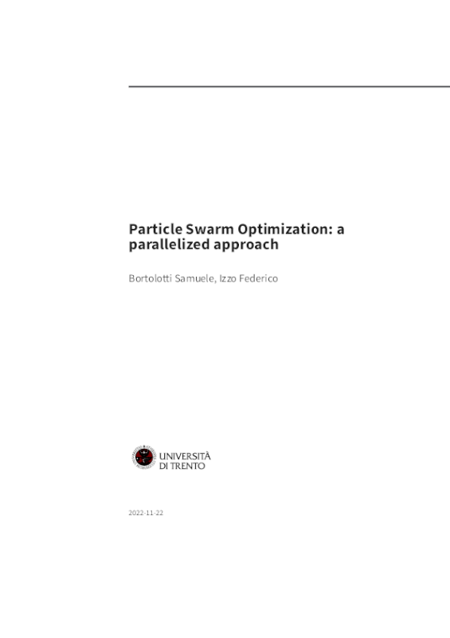
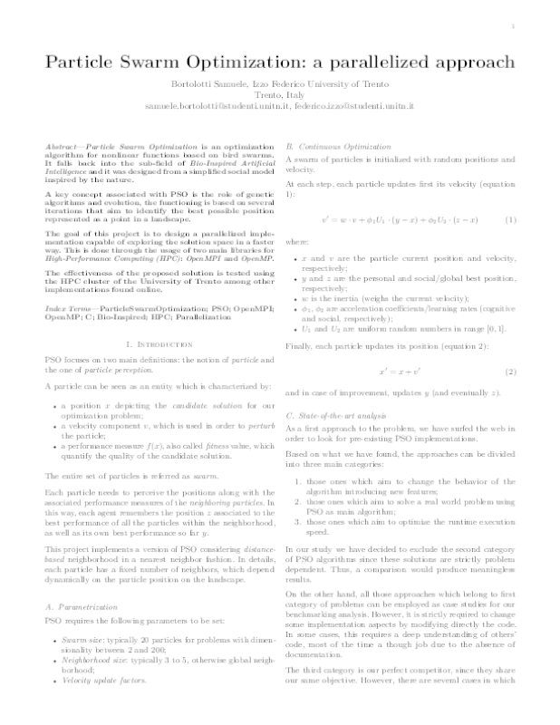
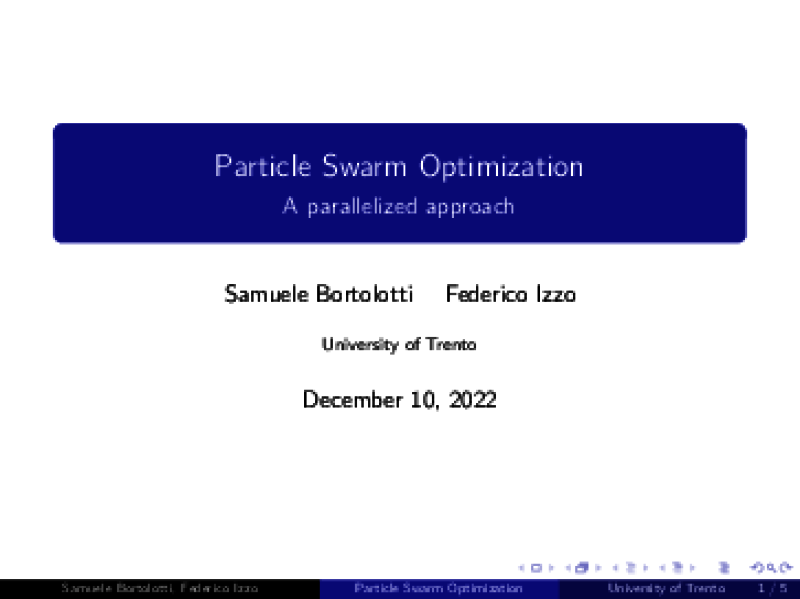
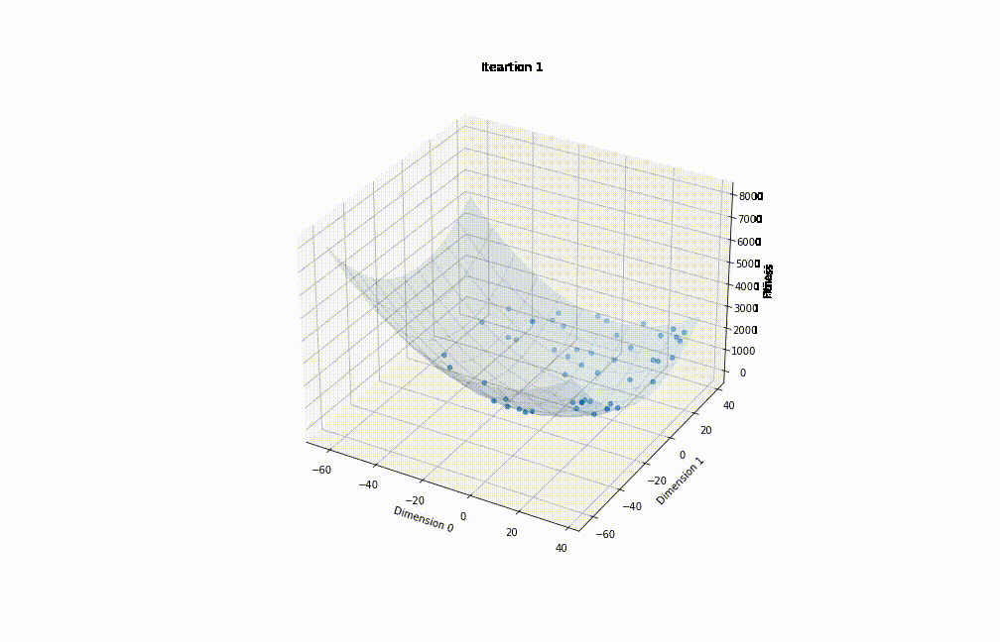
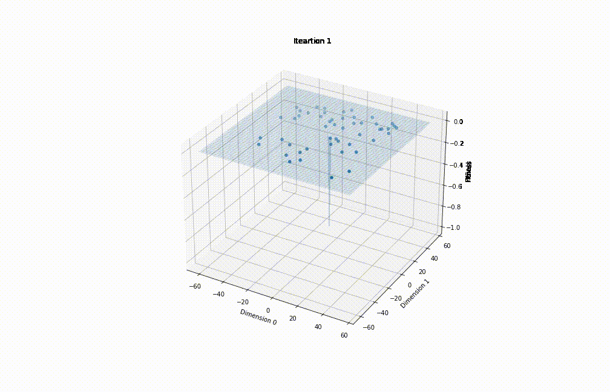
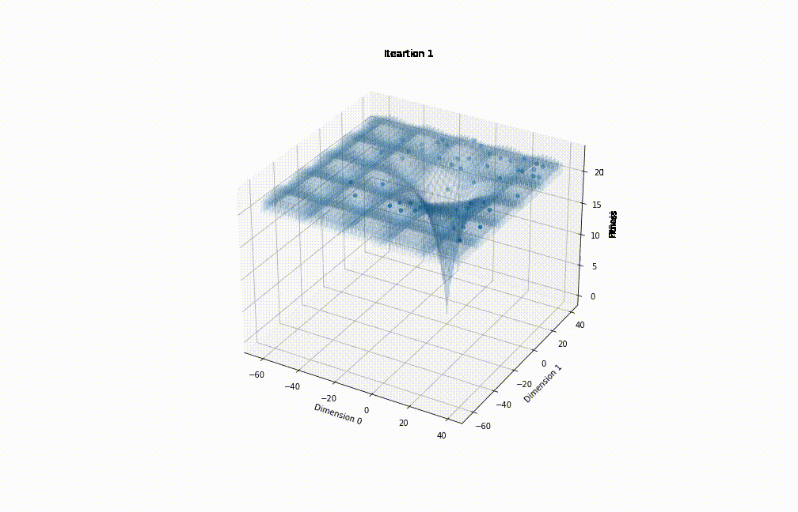

PSO - OpenMPI, OpenMP
Particle Swarm Optimization OpenMPI
Table of Contents
- Particle Swarm Optimization OpenMPI
- Build
- Binary
- Docker
- Nix
- Udocker
- Run
- Local
- Cluster (through PBS)
- Report
- Dependencies
- Build
ParticleSwarmOptimization-openMPI provides an basic implementation of PSO with support for cluster computation through OpenMPI, moreover it uses OpenMP for thread parallelization.
| Long report | Short report | Presentation |
|---|---|---|
|  |  |  |
Results
| Sphere | Easom | Ackley |
|---|---|---|
|  |  |  |
Build
Binary
make
Docker
make docker-build
with optional argument DOCKER_TAG
make DOCKER_TAG=mytag docker-build
Nix
nix build .
Udocker
make cluster-pull
Run
Local
./bin/particle-swarm-optimization pso-data.ini
or
mpirun -n <processesNumber ./bin/particle-swarm-optimization -u pso-data.ini
for optional arguments please execute ./bin/particle-swarm-optimization --help.
Cluster (through PBS)
Number of runs should be specified directly inside this script
make cluster-run
Report
make report
or
nix build .#report
Dependencies
If you have installed nix package manager
nix shell
otherwise dependencies are described below.
Build:
- OpenMPI
- sqlite C library
- make
- pkg-config
- OpenMP
Python dependencies for jupyter analysis:
- numpy
- jupyterlab or jupyter notebook
- pandas
- matplotlib
Documentation and report generation:
- pandoc
- doxygen
- latex with following packages:
- adjustbox
- babel-german
- background
- bidi
- collectbox
- csquotes
- everypage
- filehook
- footmisc
- footnotebackref
- framed
- fvextra
- letltxmacro
- ly1
- mdframed
- mweights
- needspace
- pagecolor
- sourcecodepro
- sourcesanspro
- titling
- ucharcat
- ulem
- unicode-math
- upquote
- xecjk
- xurl
- zref